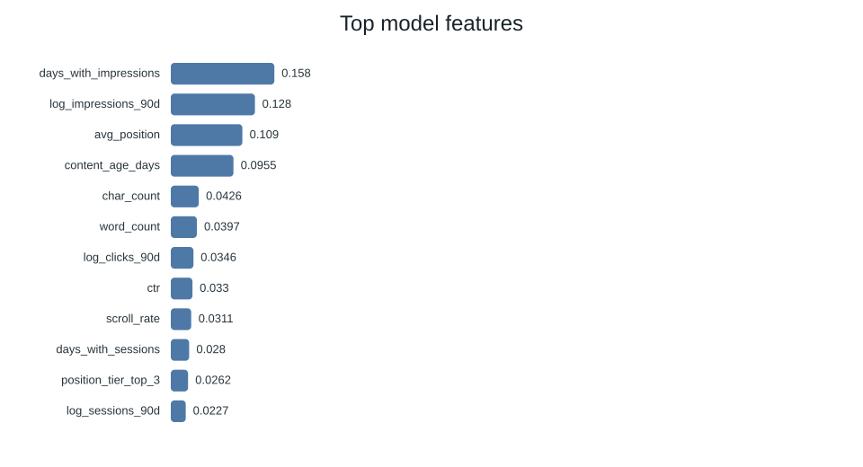
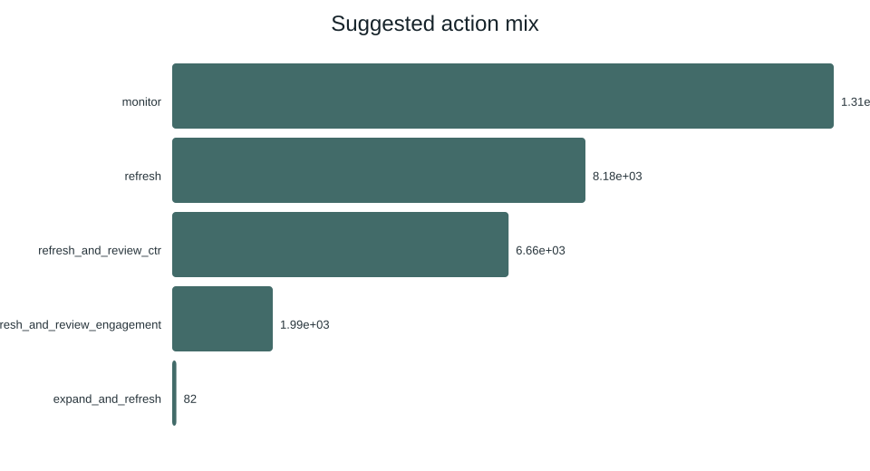

FlyRank Applied Search Intelligence — ML Internship Capstone
This project builds a content-decline risk model on 78.8 million rows of real, pseudonymized search data from the FlyRank warehouse. The eligible feature population is 389,032 content pages, ranked by the probability of a 20%+ visibility drop in June 2026, using 33 features derived from March–May 2026 daily facts, static content metadata, and query-level signals. A decision tree achieved ROC AUC 0.8679 and average precision 0.7908 on a held-out client-grouped test set of 63,500 rows, beating a transparent heuristic baseline (AUC 0.7711) and random ranking. The output is a 63,500-row operational review queue with reason codes and human-review requirements. All claims are framed as observed, measured, directional, and decision-support — not causal.
Decision supported: A content team with limited review capacity must decide which pages to inspect, refresh, or monitor first. The model ranks pages by estimated decline risk; the baseline provides a transparent rule-based review queue with reason codes.
Unit of analysis: One content item (content_hash_id) for one client (client_hash_id), aggregated over a time window.
Output: A ranked list of pages with decline probability, reason codes, and suggested actions.
Action a human takes: Review the top-ranked pages, verify the recommendation against editorial context, and decide whether to refresh, investigate tracking, leave unchanged, or escalate.
Cost of a wrong call: Time and resources spent on pages that don't need attention, or missed opportunities to catch declining pages before they lose significant traffic.
Why data/ML helps: The relationship between search signals (impressions, CTR, position, content age, freshness) and decline is too complex for a single if-statement. A learned model can combine these signals and beat a transparent hand-written rule.
Data used: FlyRank internship warehouse (Hugging Face, gated, build v20260703). Pseudonymized — no client names, domains, URLs, titles, or keywords. 78,835,655 daily rows, 519,606 content items, 104 clients, 2,414,248 query-level rows.
Columns deliberately excluded:
trend_direction, trend_pct — label source (starter proxy only, not in warehouse).impressions_last30, clicks_last30, avg_position_last30 — June = target period (leakage).client_hash_id, content_hash_id, query_hash_id — pseudonymous IDs, grouping/splitting only.health_score, priority_score, action_type, refresh_tier — product decisions, not shipped.content_total_impressions_90d, content_visible_query_count, etc. — query window overlaps target; context only.month — partition key, not a feature.Leakage risks considered:
ga4_data_available can be TRUE/FALSE/NULL (2.4M NULL in June).
Filter with IS TRUE / IS NOT TRUE, never = FALSE.avg_position = 0 means "no data", not rank zero.content_type: feedly articles have 100% missing keyword data; keyword
articles have ~18.6% missing search_volume and ~38.1% missing word_count. A blind fillna(0)
would inject a category signal — use has_* flags instead.Nothing client-identifying appears in work/. All outputs use pseudonymous IDs, aggregated
metrics, and charts from safe data.
Transparent rule: A page is worth reviewing first if it has meaningful search visibility, its CTR is substantially below what its search position would predict, and it is stale or thin.
Score formula:
baseline_score = 0.40 * visibility + 0.30 * freshness_risk + 0.25 * position_opportunity + 0.05 * depth_gap
where visibility = percentile_rank(log1p(impressions)), freshness_risk = percentile_rank(days_since_last_update), position_opportunity = (1 - normalize(avg_position)) * visibility * (avg_position > 0), depth_gap = (1 - percentile_rank(word_count)) * visibility.
Reason codes: stale_visible_page, low_ctr_visible_page, thin_visible_page, page_one_decay_risk, low_engagement_visible_page, general_refresh_review.
Why it's a fair comparison: The baseline is evaluated on the full 389,032-row feature population (base rate 0.4438) using the same June decline label as the model. The model is evaluated on the held-out 63,500-row test set (base rate 0.4806). Both use only features available by 2026-05-31. These are different populations and their metrics must not be compared directly.
Baseline metrics (real warehouse, 389,032-row population, March-May features):
The baseline is a "review priority" score, not a "decline prediction" score. Its Precision@K is below base rate because it prioritizes review candidates (high-visibility, stale, low-CTR pages), not all of which decline. This is consistent with the starter pipeline (starter P@50 = 0.240 vs base rate 0.542).
Method: Logistic regression, decision tree, and random forest — compared on the same client-grouped split and metric.
Feature list (33 features: 29 numeric + 4 categorical):
Target: is_declining_june = June impressions < 0.8 * May impressions. Base rate: 0.4438.
What was left out on purpose: June-period features, target-derived fields, IDs as predictors, query-window fields that overlap the target (impressions_last30, etc.), product flags, trend columns.
Preprocessing: SimpleImputer (constant 0 for numeric, 'unknown' for categorical) + StandardScaler (LR) / no scaler (trees) + OneHotEncoder (handle_unknown='ignore'). Class weighting: 'balanced' (LR, DT), 'balanced_subsample' (RF). All fitted on training data only.

Top 10 features by importance (decision tree). gsc_impressions_total dominates at 0.897.
Split: Client-grouped, 80/20 (train: 325,532 rows / 52 clients; test: 63,500 rows / 13 clients). RANDOM_STATE = 42. No client overlap between train and test.
Important population distinction: The baseline metrics above (§3) were computed on the full 389,032-row feature population (base rate 0.4438). The model comparison below uses the held-out 63,500-row test population (base rate 0.4806). These are different populations and must not be compared directly.
Metrics: ROC AUC, average precision, Precision@K (K=20, 50, 100), lift over base rate, confusion matrix, classification report.
Model comparison (same 63,500-row test set, same split):
| Model | ROC AUC | Avg Precision | P@20 | P@50 | P@100 | Precision | Recall | F1 |
|---|---|---|---|---|---|---|---|---|
| logistic_regression | 0.6387 | 0.6359 | 0.80 | 0.66 | 0.63 | 0.7259 | 0.3362 | 0.4595 |
| decision_tree | 0.8679 | 0.7908 | 0.90 | 0.90 | 0.86 | 0.7361 | 0.9747 | 0.8387 |
| random_forest | 0.8465 | 0.7846 | 1.00 | 0.98 | 0.96 | 0.7326 | 0.8297 | 0.7781 |
| dummy_majority | 0.5000 | 0.4806 | 0.60 | 0.56 | 0.44 | 0.0000 | 0.0000 | 0.0000 |
| heuristic_baseline | 0.7711 | 0.6640 | 0.75 | 0.84 | 0.77 | - | - | - |
Selected model: Decision tree (best ROC AUC 0.8679, average precision 0.7908).
Rationale: Best held-out ROC AUC (0.8679) and average precision (0.7908) among the three candidate models. Decision tree and random forest beat the heuristic baseline (AUC 0.7711) on AUC and average precision; logistic regression (AUC 0.6387) does not. Random forest has better precision@K (P@20=1.00, P@50=0.98) but lower ROC AUC. Decision tree chosen for best overall discrimination + interpretability (readable rules).
Confusion matrix (decision tree, threshold 0.5): TN=22,317, FP=10,666, FN=772, TP=29,745. Precision=0.7361, Recall=0.9747, F1=0.8387, Accuracy=0.820.
Model vs baseline: Decision tree (AUC 0.8679) and random forest (AUC 0.8465) beat the heuristic baseline (AUC 0.7711) on ROC AUC and average precision. Logistic regression (AUC 0.6387) does NOT beat the heuristic on either metric. The heuristic has better P@50 (0.84) than logistic regression (0.66) but lower than decision tree (0.90) and random forest (0.98).
Did the model beat the baseline? Yes, for decision tree and random forest. The model predicts decline directly; the heuristic prioritizes review candidates. These are different objectives. Logistic regression did not beat the heuristic baseline.
Dummy-majority P@K note: The dummy majority classifier predicts all rows as positive (class 1), so every row receives the same score (1.0). Precision@K is then determined by the original row order in the test set, not by the base rate alone, because all scores are tied and ties are broken arbitrarily by the stable sort. The saved values (P@20=0.60, P@50=0.56, P@100=0.44) reflect this tie-breaking behavior and do not equal the base rate (0.4806) for any finite K. This is technically valid but not a meaningful ranking baseline — all rows are tied, so the ranking is arbitrary. A genuine random ranking reference (10 permutations, from metric_verification.json) gives P@50 = 0.5000 ± 0.0775 (mean 0.5000, std 0.0775), which is the appropriate comparison for ranking quality. The dummy-majority classifier is included for completeness but should not be used as a ranking reference.
What the model found:
gsc_impressions_total dominates feature importance at 0.897. Higher historical impressions
predict higher decline risk. The temporal-window audit supports treating this as a non-leaking
historical signal, although the model may over-rely on it. Ablation shows that removing this
feature alone leaves AUC unchanged at the reported precision, suggesting redundancy with other
GSC features.gsc_days_available (0.033), gsc_avg_position (0.032), content_age_days (0.032) are secondary signals.content_type and main_intent are strong categorical signals.Surprises:
Negative results:
Feature importance sanity check: The top feature (gsc_impressions_total) makes sense — pages with more impressions have more to lose. But its dominance (0.897) is suspiciously high. Phase 5 ablation showed that removing gsc_impressions_total alone leaves AUC unchanged at the reported precision (0.8679 -> 0.8679), which suggests redundancy with other GSC features, not that the feature is independently responsible for performance. Removing all GSC features reduces AUC to 0.5485, confirming GSC features are essential as a group. This does not prove the feature is leakage; it is classified as SAFE (legitimate signal) based on the window-alignment and ablation evidence.
The ranked actions or decisions the output supports:
work/outputs/operational_review_queue.csv, 63,500 rows, 28 columns) ranks
pages by model probability (decline risk) with separate baseline score (review priority).How a content editor would use this tomorrow:
refresh_and_review_ctr: review title/meta/snippet.expand_and_refresh: consider expanding thin content.refresh: check content freshness and update.Confidence and limits:
Exact commands to re-run everything from a fresh clone:
python3 -m venv .venv
.venv/bin/python -m pip install -r requirements.txt
.venv/bin/python scripts/run_all.py # starter pipeline on bundled sample
For warehouse analysis:
# Set HF_TOKEN via env or Colab Secrets (never in a cell)
.venv/bin/python -m pip install duckdb huggingface_hub
# Warehouse notebooks must be executed in phase order:
# 1. w03_data_contract.ipynb (ML-04) - data contract + window alignment
# 2. w03_feature_leakage_check.ipynb (ML-05) - leakage audit
# 3. w04_signal_audit.ipynb (ML-06) - signal audit
# 4. w04_baseline_score.ipynb (ML-07) - baseline score
# 5. w05_model.ipynb (ML-08) - model training
# 6. w06_validation_audit.ipynb (ML-09) - validation
# 7. w07_action_playbook.ipynb (ML-10) - action playbook
# 8. capstone.ipynb (ML-11/12) - capstone
# Note: scripts/run_all.py runs the BUNDLED starter pipeline only, not the warehouse analysis.
Random seeds: RANDOM_STATE = 42 (model training), np.random.default_rng(42) (client split).
Environment: Python 3.14.4, pandas 3.0.6, numpy 2.5.4, scikit-learn 1.9.1, duckdb 1.5.6, huggingface_hub 2.2.0, pyarrow 26.0.0, reportlab 5.0.1. (CI runs Python 3.12.)
Receipts: All metrics, feature lists, split metadata, and audit results are saved in
work/outputs/*.json and work/outputs/*.parquet. The operational queue is in
work/outputs/operational_review_queue.csv.
Sealed/holdout claims: The frame-builder (notebook w05_model.ipynb) is tracked in Git. The metrics files (model_comparison.json, etc.) are currently untracked receipts in work/outputs/. The client-grouped split is reproducible with seed 42.
Built on the FlyRank ML Internship dataset. Data source: https://flyrank.ai
The anonymized starter dataset and the full pseudonymized warehouse release are provided by FlyRank for educational and research purposes. No client-identifying names, domains, page URLs, titles, or raw queries are exposed in any output. All results are framed as observed, measured, directional, and decision-support. Public attribution links (FlyRank data source, GitHub repository) are retained as required.

Distribution of suggested actions across the 63,500-row held-out test-set operational review queue.